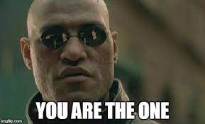

Totul a inceput cand vorbeam cu Marius despre relatii etc. Ma plangeam in fiecare zi la el ca de ce nam norocul lui,
pana a venit ziua cand mam dus la el acasa, el mia luat telefonul in timp ce ma uitam pe tt,
si sa incuiat in viceu, si a inceput sa scrie pe insta la padrugi pe care el le stia, eu care muream in acel moment.
Si tot odata, o cautat sa vada cine mia mai dat fallow pe insta, si tea gasit pe tine si tia scris si tie. Sa intelegi, Marius a scris si
la o fata de 17 ani care mia scris mie pe insta in 2021 "Buna Dulceata", dar eu nu iam raspuns. Si vorbind cu marea majoritate, nu prea am prins interesul in cineva,
ca toti au spus ca fumeaza, beau pana chica in cur, ca si cand era ceva de aplaudat. Si cand am inceput sa iti scriu tie, deja era alt ceva.
Poate si mai minciunit ca nu fumezi, dar nu ma incurca, Marius tot fumeaza ca calul, colegii s. a. m. d. Plus, tare mult ma atras felul in care scriai unele mesaje, le ador.
Si tot ce scriu eu aici e real, deoarece eu si cu Marius nici nu stiam cum arati tu, adica, pana ce miai dat tu tt tau eu adoram personaliatatea ta si felul
cum tu reactionai in unele momente, si nu mai lasat pe seen cand team lasat pe delivered vreo 11 ore, daca iti aduci aminte.

Ceia ce tine de parinti, chiar si numai ce miam luat riscul in timp ce faceam acest website, tata nervos a venit la mine si ma intrebat ce fac atata la laptop,
eu ii ziceam ca nu vreau sai arat, ca acus era sa citeasca tot ce am scris aici si era sa fiba foarte interesant pe urma. Ei si sa enervat, ma numit in toate felurile,
mai ca era sa rupa ecranul de la laptop, a scos toate cablurile, si mia luat laptopul, dar eu doar ma uitam la el fara sai zic nimic, oare era sasi dea seama ca el se comporta
ca un nebun. Ei si sa dus in camera si a inceput sa vada tot. Daca tata era sa fie baut nu mai ajungeam sati fac acest website sau sati scriu pe insta. Ieri in general mama cu tata sau certat ca
tata beia pe ascuns, si a ajuns sa doarma pe patul fratelui meu ca la balcon era frig. De aceia si nam stat noaptea cu voi. Si nu puteam sa dorm, abia am adormit pe la vreo 1 sau 2 dimineata, uitanduma in pod ca un nesanatos.
Pentru mine, laptopul acesta e cel mai important lucru pentru mine, am strans bani pentru el vreo 4 ani, daca era sal rupa nu mai eram sa vad ziua de maine.
Sorry daca am scris asa mult, dar practic avem aceleasi probleme, si inteleg perfect prin ce treci tu si cu fratele tau, mai ales pe fratele tau, eu ca si dansu, nu pot scapa de tata,
tu macar vii in Moldova si uiti cat de cat de aceste probleme. Si ce e pacat e ca tata e un om tare normal, el siar da si viata pentru cei dragi lui, dar nu inteleg cei cu el, si dear lasa si bautul, viata ar fi cu totul alt cumva.